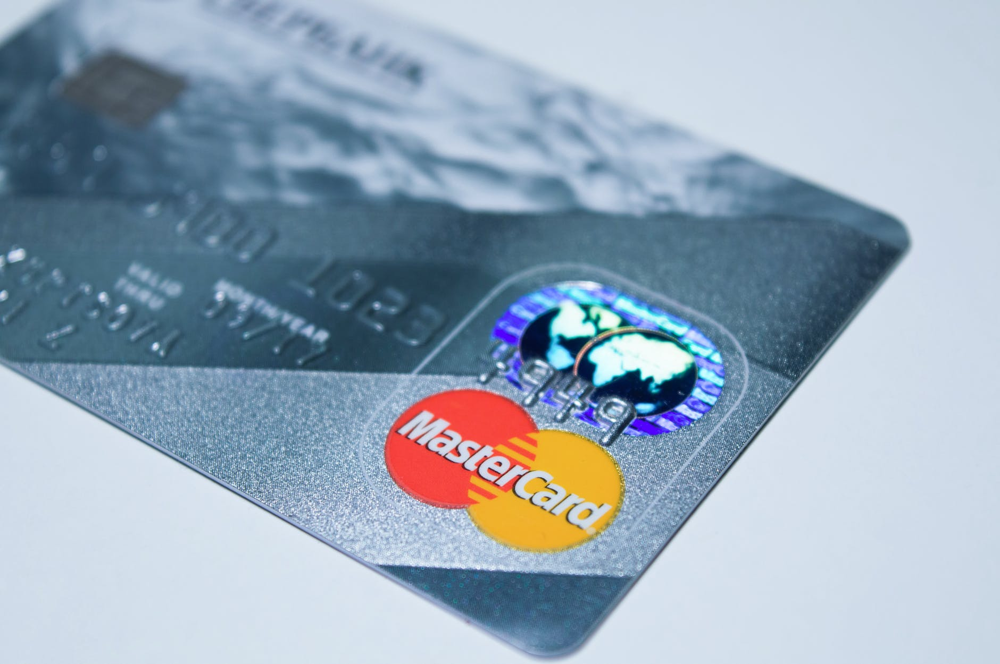
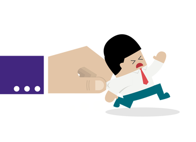

Nettsvindel
Hva er nettsvindel?
Nettsvindel er en type bedrageri som blir utført ved bruk av internett. Svindelen kan for eksempel skje via SMS, telefon, e-post, applikasjoner og nettsider. Metodene som blir brukt, varierer. Svindleren har økonomisk vinning som mål. Stadig flere blir utsatt for svindel på nettet. Det er få som anmelder denne type kriminalitet til politiet.
Typer svindel
- Falske nettburikker
- Mange forbrukere har blitt lurt av falske nettbutikker som tilsynelatende selger populære varer. Etter at du har bestilt og forskuddsbetalt det du vil kjøpe, dukker varen aldri opp – eller du får falske merkevarer. Sjekk vår løpende oppdaterte liste over falske nettbutikker!
- Abonnementsfeller
- Nettsider og e-poster med falske logoer tilbyr iPhone eller ny TV til 1 krone. I virkeligheten inngår du et abonnement på en rynkekrem eller et virusprogram du ikke trenger, og som koster deg flere hundre kroner i måneden.
- Microsoft-svindel
- Du blir oppringt av en person som sier han ringer fra Microsoft og informerer om at din PC er utsatt for sikkerhetsrisiko. Du blir bedt om å gå inn på bestemte nettsider, som uten at du vet det gir en tredjepart ubegrenset tilgang til PCen din. De sier de skal ordne problemet, og ber deg samtidig betale for tjenesten ved å få deg til å dele betalingskortopplysninger.
- Kredittkort og falske e-poster
- Du blir bedt om å oppgi kredittkortnummeret ditt ved besøk på en nettside og får trukket beløp fra kontoen uten å ha samtykket til dette. Svindlere kan også trekker penger fra bankkontoen din etter å ha gjennomført såkalt “phishing”.
- Lotterigevisner og andre "pengebrev"
- Plutselig får du en e-post eller SMS som forteller deg at du har vunnet milliongevinsten i et utenlandsk lotteri som du aldri har hørt om før. Andre klassikere er brev fra en advokat i Spania som søker etter ukjente arvinger til en stor formue, eller tilbud om å bli med på et lukrativt forretningsprosjekt.

